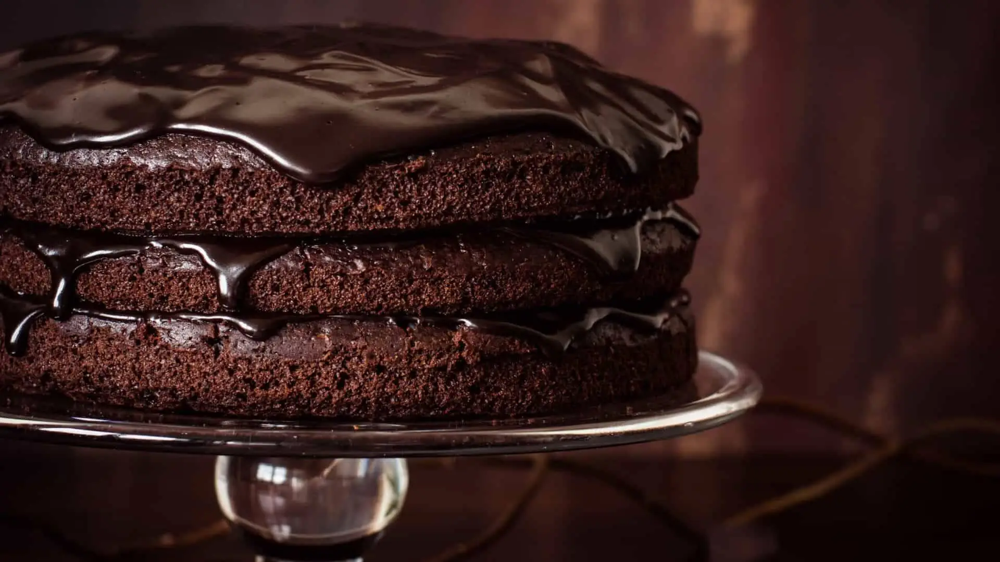

Receita de Bolo de Chocolate Trufado
Este bolo de chocolate trufado é uma delícia, com camadas fofas de bolo de chocolate intercaladas com uma trufa cremosa.
Ingredientes para o Bolo de Chocolate:
- 2 xícaras de farinha de trigo
- 1 xícara de cacau em pó
- 1 1/2 colher de chá de fermento em pó
- 1 1/2 colher de chá de bicarbonato de sódio
- 1/2 colher de chá de sal
- 2 xícaras de açúcar
- 2 ovos
- 1 xícara de leite
- 1/2 xícara de óleo vegetal
- 2 colheres de chá de essência de baunilha
- 1 xícara de água quente
Ingredientes para a Trufa:
- 300g de chocolate meio amargo, picado
- 1 xícara de creme de leite
- 2 colheres de sopa de manteiga
Instruções:
- Pré-aqueça o forno a 180°C. Unte e enfarinhe duas formas de bolo.
- Em uma tigela grande, peneire a farinha, cacau em pó, fermento em pó, bicarbonato de sódio e sal. Misture bem.
- Em outra tigela, bata os ovos e adicione o açúcar, leite, óleo e essência de baunilha. Misture até ficar homogêneo.
- Adicione a mistura líquida aos ingredientes secos e misture até ficar bem combinado. Adicione a água quente e mexa novamente.
- Divida a massa entre as duas formas preparadas e asse por cerca de 30-35 minutos ou até que um palito inserido no centro saia limpo.
- Enquanto os bolos assam, prepare a trufa. Em uma panela, aqueça o creme de leite até começar a ferver. Despeje sobre o chocolate picado e mexa até que o chocolate derreta completamente. Adicione a manteiga e misture bem.
- Deixe a trufa esfriar até que atinja uma consistência adequada para espalhar.
- Depois que os bolos esfriarem, espalhe uma camada generosa de trufa sobre um dos bolos e coloque o segundo bolo por cima.
- Cubra o bolo com o restante da trufa, garantindo que todos os lados estejam cobertos.
- Decore conforme sua preferência. Pode ser com raspas de chocolate, morangos ou o que preferir.
Aproveite o seu delicioso bolo de chocolate trufado!

contato
Fale conosco
Para mais receitas, entre em contato conosco
Nos acompanhe
Siga-nos nas redes sociais